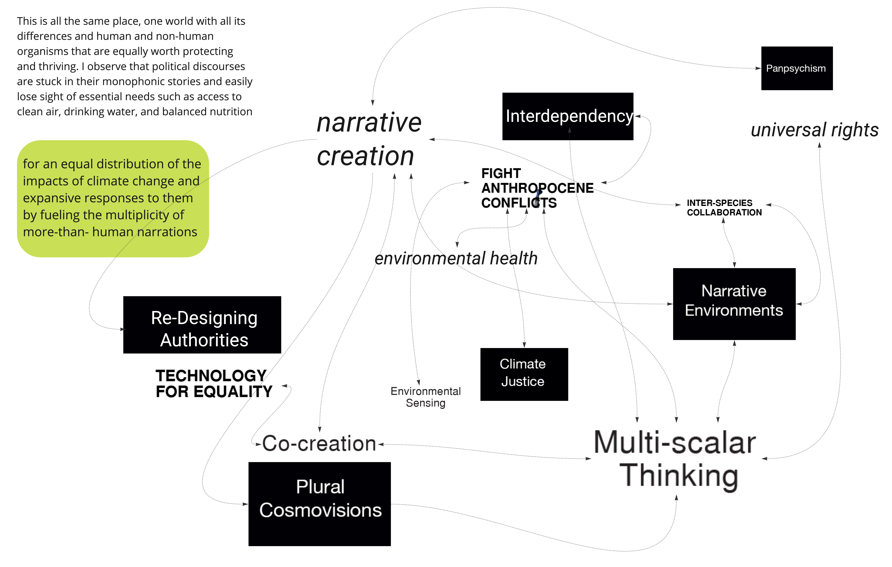
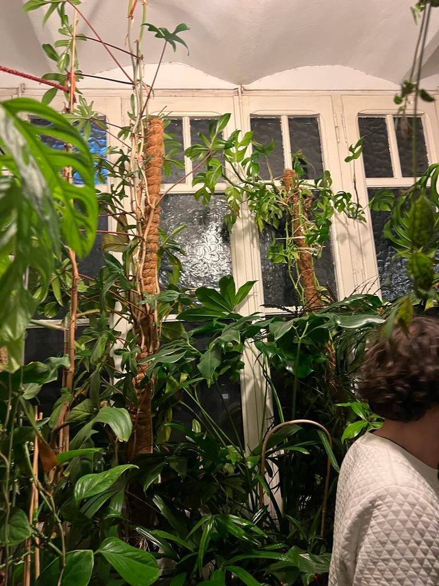
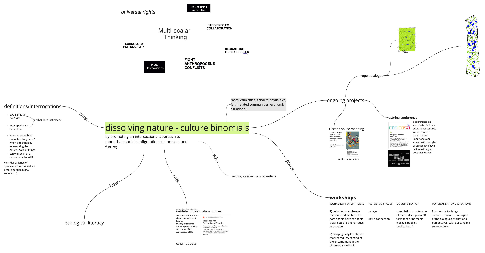
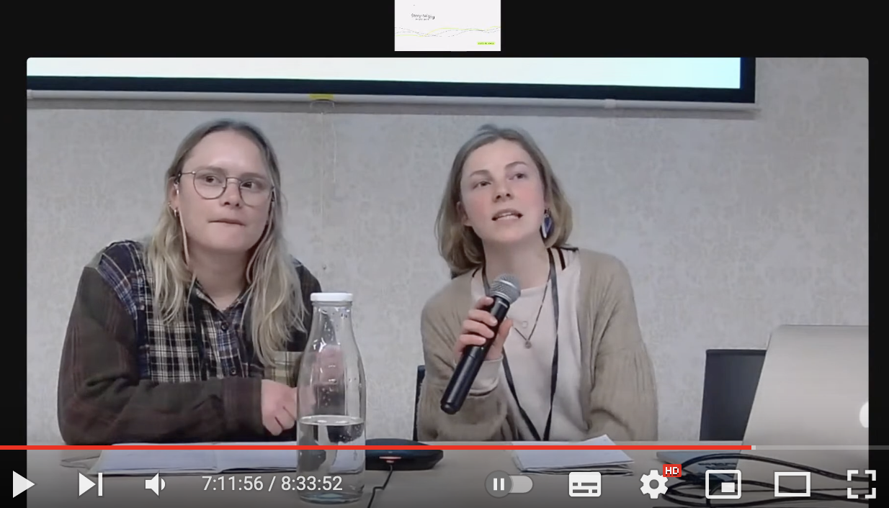

¶
design studio III¶
the design studio is there to introduce us to the methodology the MDEF programm uses to imagine alternative presents. three phases are defining the structure of our year as well. in term 1 we deal with framing perspectives, in term 2 we iterate through practically the embodying of scenaios, and in term 3 we scale ideas and prjecsts up and build infrastructures for enabling.
my journey so far¶
15. january
this term has been all about process and exploration, which I have been implementing very literally. I co-facilitated various design interventions that were all related to the emerging design spaces and my personal- as well as state-of-the-art weak signals. my first concrete idea was related to (drinking) water and the unequal distribution of this vital source across the globe.
right at the beginning of the course I wrote a letter of intent in which I stated that I wanted my practice to work towards “an equal distribution of the impacts of climate change and expansive responses to them by fueling the multiplicity of more-than- human narrations. this is all the same place, one world with all its differences and human and non-human organisms that are equally worth protecting and thriving. I observe that political discourses are stuck in their monophonic stories and easily lose sight of essential needs such as access to clean air, drinking water, and balanced nutrition”. reflecting on it now, after two months of exploring impact and implementation, I can say that this is what I have been working towards all along and that my ambitions still and even more revolve around the power of storytelling and contextualization.
however, I could not meet my own expectation of focusing my interests and developing concrete directions. it were the non-focused and multi-directional practices that expanded my comfort zone and challenged me in constructive ways. I now feel that I have a broader tool and reference box to draw from. I hope that next semester I will be able to combine both approaches and find satisfaction and (self-)realisation in the processes that arise from the contexts I will find myself in.
three take-aways from the last term:
1. think about how to integrate more-than-human entities into the MDEFs concept of “community”
2. allowing myself to focus on what’s interesting to me, also if this is linked to non-material things such as poetry and writings
3. record, reflect and document (structured and consistently) the emerging situationships
the first interventions I co-facilitated were broad and related to multi-species collaborations and integrative design processes. as events unfolded, I realized that I am not interested in multispecies design practices per se. I see my agency more in creating spaces, in curating spaces where the voices of multiple species can resonate in. I am interested in disrupting the monophony of futures and in the potential of storytelling as a tool for speculation. rather than designing futures that will always remain unpredictable, I see strength in fictional and collaborative processes that decenter the (human)self. relating this to my project idea about water, my next interventions could deal with a gathering of stories about, with and from water as an actant in the complex network of the planet’s cycles. I organized a visit to Aigües de Barcelona in Llobregat del Prat which will finally happen in the following week. furthermore, with my friend and colleague Myrto, we are participating in a conference about the potentialities of speculative fiction in educational context at the Disseny Hub Barcelona. Both are steps in the right direction and I am excited about what’s will evolve out of these events.
design space 03 / 2023¶

1PP design intervention in context¶
29. january

a first person perspective (1PP) intervention means the immersing of oneself personally into a problem- or design-space so that one can generate experientially what it means to investigate the topic of interest. this entails to gain understandings of it in order to move your thoughts forward. a 1PP intervention is one way to externalise ideas. as you can tell from my design spaces, I know what my values and overall goals are yet I don’t really have practicle examples of how this space-creation in which speculative narratives can flourish could look like. how can we materialize this open, inclusive, non-limiting place in which human and more-than-human narrate the past, the present, and the future in togetherness?
what we did was visiting our mentor Oscar Tomico and observing his 1PP lifestyle. a more detailed idea of our visit at oscars place is described in this plantiversal lexicon. reflecting on our experience shows (once more) how often expecations of what is going to happen, of how things will turn out, are not met and when staying open to the unexpected, the unknown ways of doing research, something fruitful and interesting can be dedparting point for further developments (for new expectations?)
we talk about how we can repeat this format in an alternative scenario. the most interesting idea is probably the one where the place in which Oscar and these plants are living, this apartment on the third floor of a building in the city of Barcelona, become a place to be in for us a well. instead of coming in for a few hours in a artificial set-up, we would come for some days in a row, excecute our research within the interrelations we will be becoming part of for that time. developing a intra-vention rather then an intervention.
an update on my design space, it has become our design space. Myrto and me are working on most of the things together, therefor this designspace is a collaborative one in which we (re)define our interests, weak signals and ongoing projects.
design space 04 / 2023¶

network of co-responsibility¶
05. february
before the holidays we were considering to organize a conference and to invite inspiring people tha deal in their practices with speculative futures. it seemed to us a sprroutful idea to put together various thinkers and let them share their experiences. however, it comes to being that we ourselves, were able to take part in such conference that was not organized by us but by a research institute dealing with educational systems. so last week (on the 19. of january) we presented our design space work (in the form of a paper that we wrote during the christmas break) on this small conference about speculative fiction and its important in the context of (future) education. here is a more detailed description of that intervention. it happened in the basement-rooms of the disseny disseny hub and there were about 100 participants in person and another 100 that streamed the conference via online platforms.

experiencing this conference was a direct sharing of the thoughts that others have arond speculting and taking in spaces. on the conference people presented their research fields and interests and we engaged in inspiring conversations and speculations. yet this format is not really the format we would like to facilitatte ourselves after having experienced these three days of presentations.
this lead to a reconsideration of our prior idea of organizing a conference ourselves. even if there are various formats and kinds of conferences, it remains a place in which works, practices, experiences are presented and exchanged and often no in being-with created. what it did was opening up doors to new thinkers and collectives. we are now in close collaboration with a project based in Lleida calles sensclusion which is dealing with the socio-cultural connection people (and more-than-people) have with their immediate environments in vulnerable neighborhoods.
the updated design space therefore includes all these new relations in my web of codependencies… in which I am pretty lost I have to say and (re)define all my thouoghts, references and links.
design space 05 / 2023¶
radical situatedness - the infrastructure¶
26. february
having talked, and though, and brainstormed, and mindmapped, and read, and written, and so much more the last month, it has become time to actually try to facilitate that space for speculating in which more than us (Myrto and me), (and maybe even more-than-human actants) will benefit from imagining realities. this weekend, we curated a first space for that (in the format of a workshop). more detailed you can read about it here. we went into it motivated and naiv (which I consider good - even when reflecting on how it went), without too many expectations but a good plan in our heads and hands. we created some ply-wood cards that could guide us and the participants through the day. I will summ up some of the reflection Myrto and me had in structured bullet points.
Participants
• selected and invited by facilitators
• group size was good for the collective process (10 + 2 facilitators)
• there was litle diversity in terms off backgrounds
• everyone was somehow interested and linked to he topic
Tools:
• instruction cards (prepared with the laser cutter in ply-wood) were pretty but not functional for the intended use because they were too small in size / we had not enough printed to provide each with their own
• pens and papers were enough to support the verbal input
• we could try more multimedia tools like paintings, recorders, iPads in the future
Space:
• convenient location, nice atmosphere, and hospitable environment
Day and Time:
• saturday morning worked well, people don't usually work and it wasn't too early or late (from 11 a.m. to 2 p.m.)
• duration was a little too long, especially the last part (3 hours)
Topic/ transition in focus:
• relevant, linked to all paricipants, futue-oriented (transition from in-person education to hybrids with online-exchange platforms)
• the transiton already had happened partly and seems very much linked to realities we all experience in our everyday lifes: might have caused a lack of imagination
• still overall a interesting trigger for speculative, fictional discussions about an unknown future
Workshop Format:
• the creational part was somewhat sidelined
• great exchanged and sharing of visions (pretty realistic) but left it there
• failed to collectively ideate more radical
• failed to create completely new narratives (is that a problem?)
in a next interation, a lot will be different. we are trying to use various methodologies on how to stimulate narrative creation and radical imagination. the use of more habtic and moldable materials can be incentive for further explorations of artefacts, storielines and speculations.
our common design space right after the workshop is a litle unstructured and leaves room for:
design space 06 / 2023¶

alternative presents¶
12. march
in progress
design dialogues 02¶
22. march